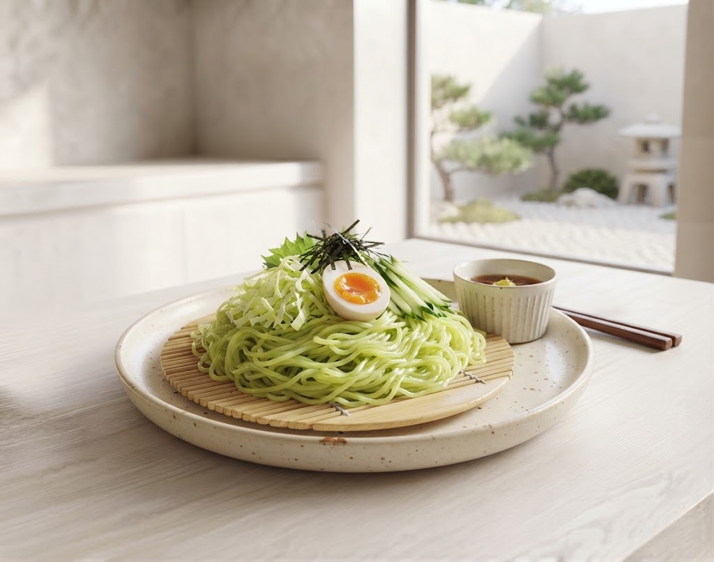

岩手町特産
採れたて鮮度
ホクホク食感
とろける旨味
さらに 旬の野菜など全11種類以上を凝縮！

いわて地産地消レストラン
2つ星獲得の誇り
私たちは地域の農業振興を第一に考えています。
特に岩手町自慢の「いわて春みどりキャベツ」の甘みと食感は、他では味わえない宝物です。
一皿一皿に、農家さんの想いと私たちの情熱を込めて提供しています。
Operated by
岩手町ふるさと振興公社
石神の丘をもっと楽しんでいただくための、ワクワクする企画を準備中！
レストランでお食事をされた方限定！敷地内の物産コーナーや産直で使える、ちょっぴりお得な割引デジタルクーポンを配信予定です。
「待ち時間なしで熱々を食べたい！」という声にお応えして、スマホから事前に注文・お取り置きができるテイクアウト予約システムを導入します。
「焼きカレーと夕焼けピコのセット、美味しすぎて２週間連続で食べました！景色も最高です。」
「石神塩ラーメンのファンですが、焼きカレーも絶品。野菜が甘くてびっくりします！」
「美術館の帰りに寄りました。雰囲気も穏やかで、レモンが効いた焼きうどんも最高！」
皆様のお越しを、スタッフ一同お待ちしております！
石神の丘美術館
ブルーベリー園
恋人の聖地
© レストラン石神の丘 | 株式会社岩手町ふるさと振興公社